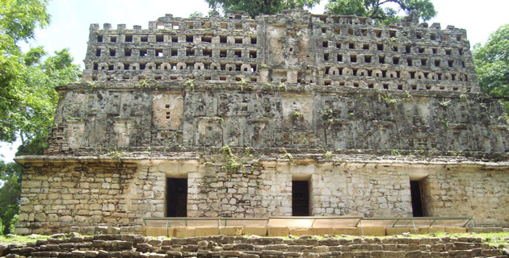

Significa “piedras verdes”. Es un espléndido escenario maya rodeado de selvas altas siempre verdes, es famoso por su arte escultórico patente en estelas y dinteles. La superficie de la ciudad es muy extensa pero su visita se restringe actualmente a parte de La Gran Plaza, La Gran Acrópolis, La Acrópolis Pequeña y La Acrópolis Sur. A La Gran Plaza se accede a través del Edificio 19, conocido también como El Laberinto, a causa de la compleja distribución de sus cuartos.
Ciudad Maya edificada en la margen izquierda del río Usumacinta y desarrollada entre los años 350 y 810 d.C. Notable por la gran cantidad de esculturas en piedra que incluyen estelas y dinteles, así como poseer la gran Acrópolis, la Acrópolis pequeña y la Acrópolis Sur. Un lugar muy cercano a Yaxchilán es Frontera Corozal, en donde podemos encontrar el Museo Comunitario del mismo nombre.
Partiendo de Ocosingo – Frontera Corozal (llegando a frontera seguir los señalamientos a las Ruinas- frontera con Guatemala):
Diríjase hacia 2ª Avenida Sur Pte. – Seguido gire a la Internacional – continúe por Ocosingo-Palenque/Palenque-Ocosingo/México 199 – gire a la derecha con dirección a Trinitaria-Palenque/Palenque-La Trinitaria/Carretera Federal 307 – gire hacia la derecha, manténgase en esa dirección hasta topar con Frontera Corozal – seguido siga los señalamientos hacia el Sitio Arqueológico Yaxchilan que se ubica con Frontera con Guatemala.
Usted y su familia podrán disfrutar de este maravilloso sitio arqueológico, visitar cada uno de sus rincones más preciados, podrá tomar fotografías de toda la selva verde que rodea todo este maravilloso sitio.

posicione el mouse sobre las imágenes